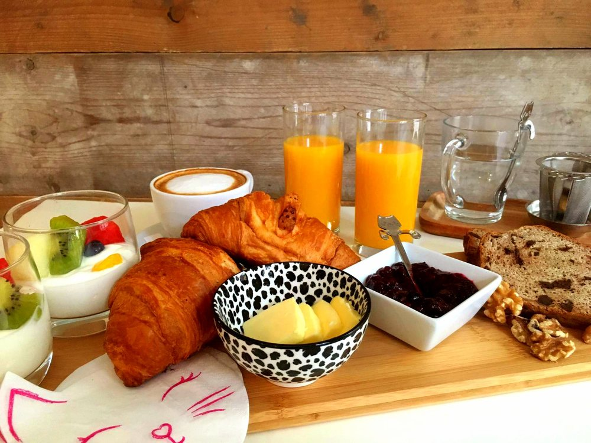
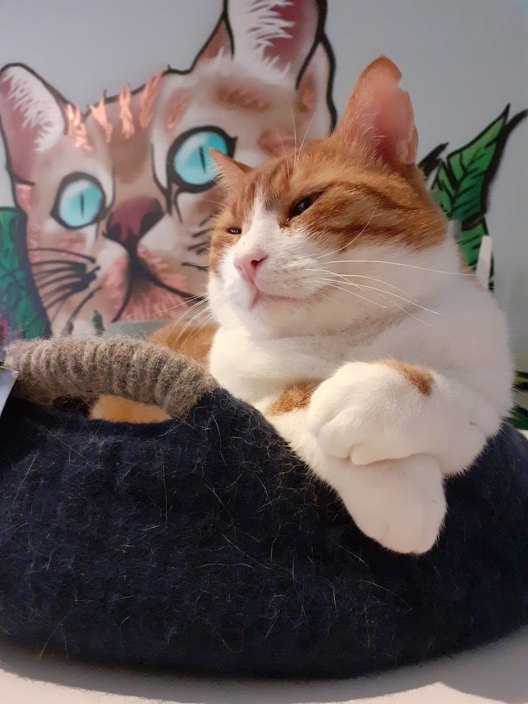
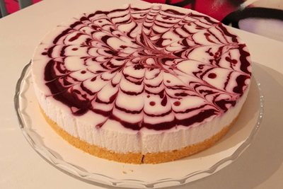
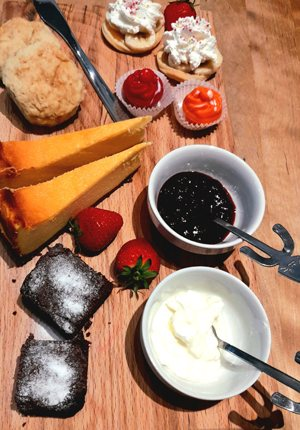
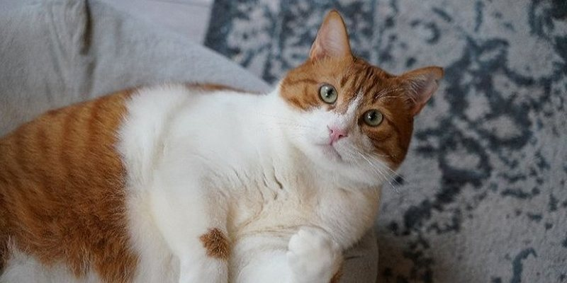
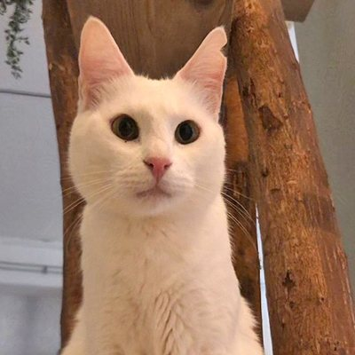
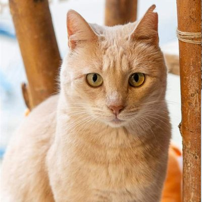
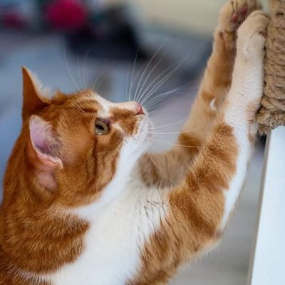
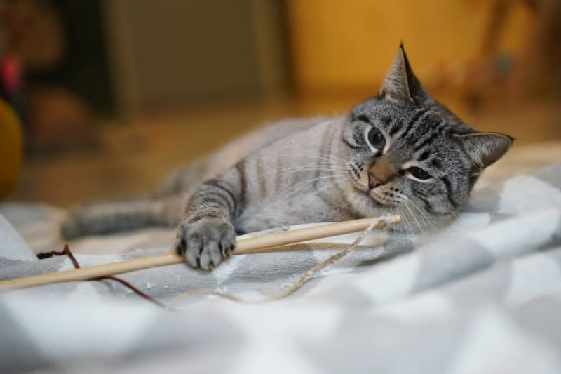

Ontbijt & lunch
Een ontbijt- of lunchplank voor 2, broodjes, tosti's en wraps. Het aanbod wisselt steeds.
Ook vegetarisch, vegan en glutenvrij
Ontbijt, lunch en huisgemaakte taart tussen onze 9 geadopteerde katten. Midden in het dwaalgebied, op 400 meter van station Tilburg.
Met een collega, met vriendinnen of om te studeren: met een spinnende kat op schoot voel je je hier snel thuis.

Een ontbijt- of lunchplank voor 2, broodjes, tosti's en wraps. Het aanbod wisselt steeds.
Ook vegetarisch, vegan en glutenvrij
Koffiespecials zoals een Oreo of caramel latte, met onze lemon cheesecake of een vegan brownie XL.
Taartjes zelf gemaakt
Drie gangen met een soepje vooraf, hartige en zoete hapjes en onbeperkt verse thee.
14.00 - 16.00 uur, 1 dag vooraf reserverenNegen geadopteerde katten, elk met een eigen karakter. Acht komen uit dezelfde opvang op Kreta, Mees komt uit Spanje.

De grote vriendelijke reus
Lees meer
Zachtaardige knuffelkont
Lees meer
Assisteert aan de balie
Lees meer
Ligt graag bij je op schoot
Lees meer
"Met een spinnende kat op schoot ben je nooit alleen."
Door mensen samen te brengen met de eigenwijze kat ontstaat er verbinding. Met de hulp van 297 donateurs uit de crowdfunding is de Spinnerij een sociale ontmoetingsplek geworden in hartje Tilburg.
Er is ook van alles te beleven: creatieve workshops, lezingen over katten en hun gedrag, yoga tussen de katten en een potje kattenbingo. De data delen we op Facebook en Instagram.
Het café is het huis van onze katten. Zo wordt het voor jou en voor hen een fijne ervaring.
Het is zeker aan te raden, vooral in het weekend. Je reserveert een tijdsblok van maximaal 90 minuten. Zonder reservering mag je altijd even kijken of er plek is, maar dan is er geen garantie op een tafel.
Verhinderd? Laat het ons even weten via WhatsApp. Ben je 15 minuten na je aanvangstijd niet binnen, dan geven we je tafel weer vrij.
Vanaf januari 2026 vragen we € 3,50 per persoon, kinderen t/m 4 jaar gratis. Je betaalt het bij het afrekenen, niet vooraf.
We besteden het aan dieetvoeding, de dierenarts, vaccinaties en de verwarming die in de koude maanden altijd aan moet.
Ja, als je ze bij de reservering aanmeldt. We hebben een maximum van 4 kleine kinderen per tijdsblok. De adviesleeftijd is vanaf 6 jaar.
Katten slapen soms wel 16 uur per dag: het café is hun huis, geen speeltuin.
De Spinnerij wordt elke dag grondig schoongemaakt. Onze keuken is een afgesloten ruimte waar de katten niet in kunnen. De kattenbakken en etensbakjes staan in een aparte cats-only ruimte, en in de sluis bij de entree staat desinfectiegel.
Ja, er is een brede sluis en een oprijplank voor de deur, en we helpen je graag. Geef het aan bij je reservering, dan houden we een fijne tafel vrij. Het toilet is helaas niet rolstoeltoegankelijk, wel met een rollator.
Met de auto parkeer je het best aan het Louis Bouwmeesterplein, op 5 minuten lopen. Vanaf station Tilburg ben je er in 10 minuten.
Met de fiets? Zet hem niet voor de deur: op 50 meter is een gratis fietsenstalling (Heuvelstraat).
Kies een datum en tijd en stuur het ons via WhatsApp. We bevestigen je reservering zo snel mogelijk.
Een vraag, speciale wensen of iets te vieren met een groep? We denken graag mee.